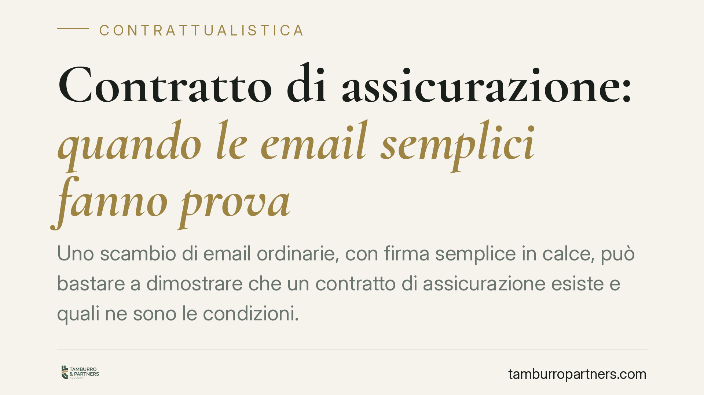

Contratto di assicurazione: quando le email semplici fanno prova
Uno scambio di email ordinarie, con firma semplice in calce, può bastare a dimostrare che un contratto di assicurazione esiste e quali ne sono le condizioni. La Suprema Corte, in recenti pronunce, ha valorizzato la corrispondenza informatica insieme alla condotta delle parti. Un principio che incide su compagnie, aziende e consumatori nella gestione della prova.

Il punto
Un contratto di assicurazione può ritenersi provato anche senza polizza cartacea sottoscritta, quando lo scambio di email ordinarie tra le parti — letto insieme al loro comportamento concreto — dimostra un accordo su premio, rischio e prestazione.
È un tema che tocca ogni giorno chi negozia coperture assicurative via posta elettronica senza formalizzare subito il documento firmato. La conclusione della Corte non è che «l'email vale come polizza firmata», ma qualcosa di più sfumato: la corrispondenza informatica entra nel materiale probatorio e va valutata dal giudice.
Inquadramento normativo
Occorre distinguere due piani che spesso vengono confusi.
Il primo è la validità del contratto. Il secondo è la prova del contratto. L'art. 1888 del codice civile stabilisce che il contratto di assicurazione «deve essere provato per iscritto». La forma scritta, qui, non è richiesta per la validità dell'accordo (*forma ad substantiam*), ma per la sua dimostrazione in giudizio (*forma ad probationem*). Significa che il contratto può nascere anche verbalmente, ma per farlo valere davanti a un giudice serve un supporto scritto.
È su questo secondo piano che entra in gioco l'email. L'art. 2712 c.c. attribuisce alle riproduzioni informatiche piena efficacia probatoria dei fatti rappresentati, a una condizione: che chi vi appare non ne disconosca la conformità in modo specifico e tempestivo. Un disconoscimento generico o tardivo non impedisce al giudice di considerarle.
Va però usata prudenza sull'equazione «email = prova scritta idonea ex art. 1888 c.c.». La questione va inquadrata anche alla luce dell'art. 20 del Codice dell'Amministrazione Digitale (CAD): il documento informatico privo di firma qualificata o digitale — come l'email ordinaria con semplice firma in calce — non ha efficacia probatoria predeterminata dalla legge. Il suo valore resta rimesso alla libera valutazione del giudice, che ne apprezza le caratteristiche di sicurezza, integrità e immodificabilità, insieme agli altri elementi di causa. La condotta successiva delle parti (pagamento del premio, gestione di un sinistro, richieste coerenti con la copertura) può quindi diventare decisiva.
> Nota di redazione: i riferimenti giurisprudenziali specifici sono in corso di verifica presso la nostra redazione prima della pubblicazione definitiva. L'articolo espone il principio, non un singolo estremo di pronuncia.
Implicazioni pratiche
Per le compagnie assicurative. La trattativa via email non è terreno neutro. Preventivi, conferme di copertura e scambi interlocutori possono essere invocati dal cliente per sostenere che una copertura era stata pattuita. Serve chiarezza su cosa è offerta e cosa è mera negoziazione.
Per le aziende (ad esempio una società di trasporti che assicura la merce). Un'email di conferma può tornare utile per dimostrare l'esistenza della copertura in caso di sinistro, ma può anche vincolare a condizioni non lette con attenzione. La corrispondenza va gestita con la stessa serietà di un contratto.
Per i consumatori. Cresce la tutela di chi si è visto negare l'esistenza di una polizza mai perfezionata su carta. Ma cresce anche la responsabilità: ciò che si scrive per email pesa.
Cosa fare in concreto
- Verificate prima di ogni sinistro se e come la copertura è stata effettivamente conclusa: raccogliete tutta la catena di email, non solo l'ultima.
- Conservate la corrispondenza in modo integro e ordinato, con metadati e allegati; un archivio disordinato indebolisce la posizione probatoria.
- Contestate in modo specifico e tempestivo eventuali email che vi vengono opposte e che non riconoscete: un disconoscimento generico, ai fini dell'art. 2712 c.c., rischia di essere inefficace.
- Formalizzate appena possibile l'accordo in un documento sottoscritto o firmato digitalmente, per non affidare la prova alla sola valutazione discrezionale del giudice.
- Mantenete coerenti i comportamenti rispetto a quanto scritto: pagamenti, comunicazioni e richieste devono allinearsi, perché la condotta successiva è essa stessa elemento di prova.
Consigliamo, nelle trattative rilevanti, di distinguere sempre in modo esplicito la fase di preventivo dalla conferma vincolante, così da ridurre il margine di incertezza sulla data e sul contenuto dell'accordo.
In sintesi
La forma scritta ad probationem del contratto assicurativo non richiede necessariamente una polizza firmata: un carteggio email, se non contestato in modo rigoroso e se coerente con i fatti, può bastare. Ma «può bastare» non è «basta sempre». Il valore probatorio dell'email con firma semplice resta soggetto alla libera valutazione del giudice.
Ogni contratto ha il suo equilibrio.
Se vuoi una revisione delle clausole o una redazione su misura, scrivi allo studio. Ti rispondiamo entro un giorno lavorativo.